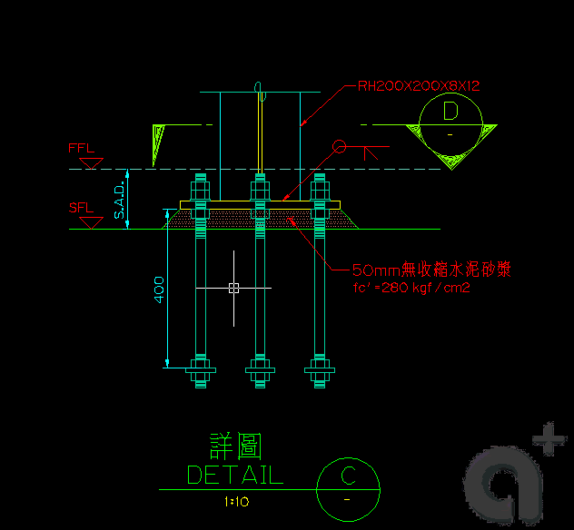

使用 現地編輯參考 不僅可以編輯 外部參考還可以編輯 圖塊，他的優點可以將 外部參考或圖塊 使用現地編輯的方式，而被編輯的 外部參考或圖塊 會使用 前景 及 背景 方式來區分，不屬於工作集的參考中的物件會有褪色的效果，讓你可以清楚直接編輯工作集中的項目，還可以看見與 背景物件 的相關關係及位置可說是非常實用。

PS:而從2008版本開始在 鎖護圖層 方面 也加入了 鎖護的物件會已褪色呈現，與參考編輯 有異曲同工之妙~
AutoCAD 2008『圖層顯示』的增強功能(三)
http://tw.myblog.yahoo.com/tiger-apple/article?mid=850&prev=1542&next=848&l=f&fid=19
※以下資料來源：AutoCAD 2008 使用者說明文件
-------------------------------
您可以使用現地參考編輯，在目前圖檔中修改外部參考與重新定義圖塊定義。 圖塊與外部參考都視為參考。
透過現地編輯參考，便可以在目前圖面的可視環境中修改此參考。
通常，圖面包含一或多個外部參考與多個圖塊參考。 處理圖塊參考時，您可以選取圖塊、修改及更新圖塊定義。
處理外部參考時，可以選取要處理的參考，修改其中的物件，然後將變更存回參考圖面中。 不需要在圖檔之間來回切換，您可以做較少次數的變更。
☆註 如果您計劃對參考圖面進行較大變更，請開啟參考圖面並直接在檔案內編輯。 使用現地參考編輯執行較大變更時，在現地參考編輯階段作業期間會顯著增加目前圖檔的尺寸。
在繪圖區中只能選取屬於選取的參考的物件。 在目前圖面中，從所選參考中選取的物件被萃取，並使其可供修改。 萃取物件集或工作集可以修改，然後回存以更新外部參考或圖塊定義。 組成工作集的物件在外觀上與圖檔中的其它物件不同。 目前圖檔中的全部物件，除了工作集中的物件之外，都褪色了。
系統變數 XFADECTL 控制當現地編輯參考時物件的顯示方式。 從參考中萃取的物件集將正常地顯示。 圖檔中所有其它物件，包括目前圖檔中的物件與任何不屬於工作集的參考中的物件都褪色了。 此值指示不在工作集中之物件的顯示強度。 XFADECTL 的值越大，物件褪色的程度就越顯著。
選取要編輯的巢狀式物件後，「參考編輯」工具列會顯示並啟用。 使用「參考編輯」工具列上的按鈕，可以在工作集內加入或移除物件，也可以捨棄或回存所作的參考變更。 如果「參考編輯」沒有固定，在您回存或捨棄對工作集所作的變更之後，「參考編輯」工具列將自動關閉。